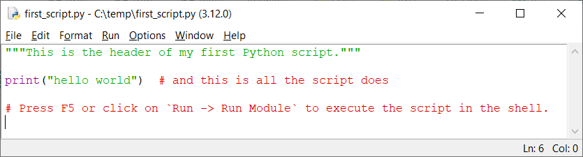

Quick Start¶
This documentation includes countless doctest examples, which you can easily repeat via copy-paste to gain insights into all the details of HydPy. At first, it may be overwhelming, so you need to get adjusted and find the relevant starting points that match your skills and aims. If you want to take advantage of HydPy’s full flexibility by using it as a Python library and are already familiar with Python, go to the Simulation > Python subsection. Without Python experience, you should review the following paragraphs beforehand. If you are, in contrast, primarily interested in executing standard workflows, for example, in the context of flood forecasting, you might prefer starting with the Simulation > XML subsection.
Starting Python¶
The best first experience comes with using HydPy interactively. Therefore, one first must start a Python shell. The most basic choice is the Python Interpreter. With a default installation on Windows, you can type py into a console like the command prompt (cmd), which tells the Python Launcher to search for the interpreter of the currently preferable Python version installed on your computer (usually, the most recent one) and start it:
C:\>py
Python 3.13.1
Type "help", "copyright", "credits" or "license" for more information.
>>>
To start learning Python (and HydPy), a good choice is Python’s Integrated Development and Learning Environment IDLE, which also comes with regular Python distributions. Open its shell via the Windows menu or by writing:
py -m idlelib
{kind=link}
The two mentioned options require a regular Python installation on your computer. The following command also works with HydPy installed independently from a regular Python distribution via its Windows installer:
hyd.py start_shell
>>>
You may want to save modified or freshly created examples in Python scripts. For a start, IDLE does not only provide the (initially opened) shell window but can also open multiple editor windows (click on File → New File):
{kind=link}
When seriously starting to work with Python, consider using more capable shells like IPython or complex Integrated Development Environments like Pycharm.
Using Python¶
Understanding the functioning of HydPy requires only basic Python knowledge, to which this subsection offers a brief introduction.
In the shell, the >>> symbol tells you that Python is expecting your first action. First, do some math and see if you get the correct result:
>>> 1 + 2
3
Assignments work with =:
>>> x = 4
>>> x
4
Checks for equality and identity rely on == and is:
>>> y = 4.0
>>> x == y
True
>>> x is y
False
!= and is not are their counterparts:
>>> x != y
False
>>> x is not y
True
Many functions like print() accept both positional and keyword arguments:
>>> print(1, "<", 2) # three positional arguments
1 < 2
>>> print(1, "<", 2, end=" is True") # three positional and one keyword argument
1 < 2 is True
Python uses colons and indentations instead of brackets to define control flow structures, such as if-else clauses:
>>> if 1 < 2:
... print("yes")
... else:
... print("no")
yes
The most common way of defining loops is using for … in … expressions:
>>> for i in [1, 3, 2]:
... (2 * i) ** 2
4
36
16
Write import … to import another library completely or import … from … to load one or more of its members:
>>> import hydpy
>>> from hydpy import HydPy, pub
. serves for member access:
>>> hydpy.pub is pub
True
In assert …, assert checks if … is true:
>>> assert pub.options.utcoffset == 60 # right, so nothing happens
>>> assert pub.options.utcoffset == -60 # wrong, hence an AssertionError
Traceback (most recent call last):
...
AssertionError
The with statement usually starts something and undoes it after finishing the following indented block:
>>> with pub.options.utcoffset(-60):
... assert pub.options.utcoffset == -60
>>> assert pub.options.utcoffset == 60
In Python, everything is an object, and every object allows you to inspect it to find out about its features:
>>> obj = "test"
>>> assert type(obj) is str # What type has `obj`?
>>> dir(obj)[-4:] # What are it's members?
['title', 'translate', 'upper', 'zfill']
>>> obj.upper() # What does its method `upper` do?
'TEST'
Assigning an object to a variable does not involve copying it. One merely gets another reference (or pointer) to the same object:
>>> list1 = [1, 2]
>>> list2 = list1
>>> assert list1 is list2
>>> list2.append(3)
>>> assert list1 == [1, 2, 3]
The same holds for passing objects to functions:
>>> def append_value(list_, value):
... list_.append(value)
...
>>> append_value(list2, 4)
>>> assert list1 == [1, 2, 3, 4]
Caution
Python provides functions for making flat and deep copies of objects. “Deep copying” means that an object and its subobjects are copied. This effort is favourable in some situations but results in additional memory usage and computation time. HydPy’s Cython-based extension classes, and thus HydPy in general, do not support deep copying.
Run HydPy¶
After this first dive into Python’s syntax, we introduce you to HydPy. For an easy start, please download and unzip the HydPy-H-Lahn example project into a working directory of your choice.
Now open, for example, the IDLE shell as explained above and activate the selected directory. Let us, therefore, first define the working directory’s path as a string. We take “C:/temp” as an example, but you can specify any other directory (on Windows, you could also write r”C:\temp” for “C:\\temp”):
>>> workingdir = "C:/temp"
Now, import Python’s os module and use its chdir function to activate the
preferred working directory:
>>> import os
>>> os.chdir(workingdir)
The now-activated directory should contain a subdirectory named HydPy-H-Lahn containing, for example, the sub-subdirectory network. The following code line checks this:
>>> assert os.path.exists(os.path.join(workingdir, "HydPy-H-Lahn", "network"))
After these preparatory steps, we finally get started with HydPy. HydPy is a so-called “site package”, and, in Python, site package names are by convention lowercase:
>>> import hydpy
The entry point to each project is the central HydPy class. Initialise it by passing
the project’s name to it:
>>> hp = hydpy.HydPy("HydPy-H-Lahn")
Equally prominent throughout this documentation is the pub module, which allows for
the specification of general information. Here, we use it to define the first date,
the last date, and the time step size of the considered simulation period in the
simplest possible manner:
>>> hydpy.pub.timegrids = "1996-01-01", "1997-01-01", "1d"
Now, there are numerous ways to proceed. We choose the most straightforward one
(without deviating from a single default) and call method prepare_everything()
of class HydPy, which “prepares everything” so far as to leave the HydPy instance
in a simulation-ready state:
>>> hp.prepare_everything()
The catchment outlet of the HydPy-H-Lahn example project is named lahn_kalk. The following example demonstrates how to query the discharge values simulated for this outlet:
>>> from hydpy import print_vector
>>> print_vector(hp.nodes.lahn_kalk.sequences.sim.series[:6])
nan, nan, nan, nan, nan, nan
nan means “not a number”, indicating missing values. In this example, the
nan values tell us we have not performed a simulation run. We catch up on this
by calling method simulate():
>>> hp.simulate()
Now, we can inspect the freshly calculated discharge values:
>>> print_vector(hp.nodes.lahn_kalk.sequences.sim.series[:6])
54.019337, 37.257561, 31.865308, 28.359542, 26.191386, 25.047099
You could now write the results to file, print them into a figure, evaluate them statistically, or change some configurations and repeat the simulation if you don’t like them. As a last example, we compare the complete simulated discharge time series with the available measurements of gauge Kalkofen by plotting them:
>>> figure = hp.nodes.lahn_kalk.plot_allseries()
Tip
If the desired time series plot does not appear automatically (which depends on
your configuration of the matplotlib library), type the following commands:
>>> from matplotlib import pyplot
>>> pyplot.show()
As you can see, a few lines of code are often enough to let HydPy execute complex tasks in a standard manner. However, HydPy offers fine-grained control, allowing you to define specific workflows to solve individual problems. Take your time to understand these first examples fully and then follow the more detailed explanations in the Simulation > Python and Simulation > XML sections.